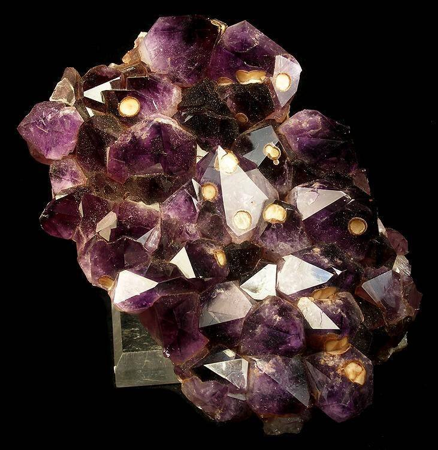
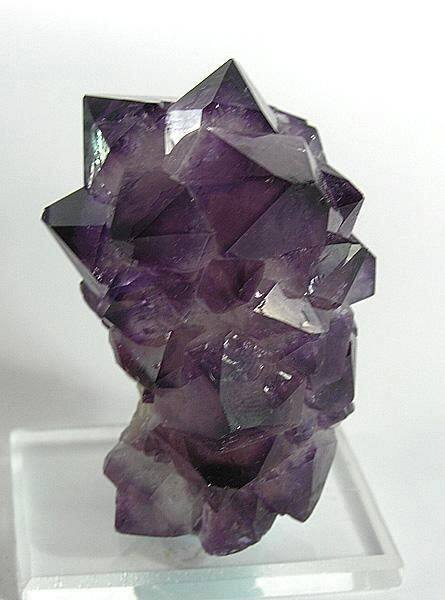

Las piedras, contadas de otra manera
El Centro Cultural Museo de la Piedra Preciosa abrió en noviembre de 2025 en La Casona, un edificio declarado Monumento Histórico Nacional. El recorrido va desde el origen volcánico de las piedras hasta el trabajo de hoy: extracción, clasificación, tallado y exportación.
Se hizo con apoyo del Ministerio de Turismo y del BID, a través del Programa de Desarrollo de Destinos Turísticos Emergentes, sumado a fondos de la Intendencia.
Qué vas a encontrar
- Simulaciones holográficas de ágatas y amatistas.
- Mesas para identificar piedras y conocer su origen.
- Videos 3D y experiencias inmersivas dentro de túneles y canteras.
- Testimonios de mineros, artesanos y operarios.
- Mapas interactivos de los yacimientos y recorridas en 360° con lentes de realidad virtual.
- Herramientas, uniformes y piezas originales, y la historia del propio edificio.
Fotos

Foto: Robert M. Lavinsky · CC BY-SA 3.0 · Foto de referencia

Foto: Robert M. Lavinsky · CC BY-SA 3.0 · Foto de referencia